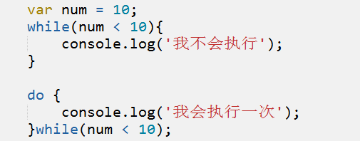

js--循环
作者： 千锋李文浩
时间： 17/01/10
补充
1、编程语言不支持 连续比较
-10 <= a <= 10 => 不支持
-10 < a && a <= 10
a >= -10 && a <= 10
2、document.write()
如果写在事件里面，会覆盖整个body
3、parseInt parseFloat
parseInt('123a') => 123
parseInt('a123') => NaN
字符串会保留从第1位开始是连续数字的部分
火狐调试工具（Debug工具）
1、断点
2、单步调试
3、变量监听
三元表达式（扩展）（重）
表达式 ? 值1 : 值2;
有变量 a = 2; b = 4; c = 0; 如果 a > b,则 c = a; 否则 c = b;
1、用if(){}else{}实现
2、简化
三元表达式 （其实就是对if特殊情况的简写）
条件 ? 值1 : 值2;
？ 代表判断（判断条件是否为真）
如果条件为真，返回 ? 后边的内容
如果为假，返回 : 后面的内容
生活场景
当向自己的男神（女神）表白的时候，ta要你说10000句“我爱你”，怎么办？
甲：亲爱的，一万句我爱你
乙：买了个喇叭，录了一句“我爱你”，放了10000遍
丙：在楼下喊了10000遍，结果。。。
编程场景
1、计算 1+2的值
2、计算 1+2+3的值
3、计算1+2+3+4的值
...
50、计算1+2+3+4+...+50;
怎么实现1-50的和呢？
思路：
1、定义一个计数变量i,初始值为1,定义变量sum
var i = 1,sum = 0;
2、判断i是否小于等于50,是的话计数+1，sum加上计数的值
if(i < =50){
sum += i; // sum = sum + i;
i++;
}
3、要是第二步能重复就好了
循环的概念和意义
1、什么是循环？
重复执行某个动作或者某些语句（代码块）
什么是代码？
代码块？ 一段代码 { //somecode... }
2、循环有什么用？
1、简化代码，处理重复的动作
2、一般用于遍历数组、json对象、元素集合。
while循环（重）
含义：当...的时候一直做...
写法：
while(循环条件){
循环内容 //循环体
}
循环过程：
当while循环开始后，先判断条件是否满足，如果满足就执行循环内容，执行完毕后再回来判断条件是否满足，如此无限重复；直到条件不满足时，循环结束。
注意：一定要在循环体内改变循环条件
循环初体验
1、在页面上写100句“我爱你，mom”
2、 计算 1+2+3+...+50的和
console
1、console.log(mes1,mes2) 在控制台中打印信息(可以连续打印多个)
console.log() alert() document.write()
2、console.warn() 警告
3、console.error(); 错误
循环深入
1、打印100以内 7的倍数 的数
2、打印100以内的 奇数
3、计算100以内所有 偶数 的和
4、打印出1000-2000年中所有的闰年，并以每行四个数的形式输出
do{}while()
无论条件是否成立，至少执行一次
和while的规则一样，唯一不同的是 do{}while()会先执行一次（先执行后判断）。
do{
//循环体
}while(循环条件);

缩进快捷键：
tab 往后缩进选中的代码
shift + tab 往前缩进选中的代码
for循环（重）
含义： 根据循环变量循环固定的次数
写法：
for(循环变量;循环条件; 改变循环变量){
//要做的事情
}
for(var i=0; i<10; i++){
//要做的事情
}
解读：
循环变量： 用于控制循环是否结束的变量 （给变量赋初值，只执行一次）
循环条件： 判断循环是否继续 （每轮都会执行）
改变循环变量： 用于改变循环变量 （每轮都会执行）
for循环初体验
1、计算10的阶乘 10*9*8*7*...*1
2、打印100–200之间所有能被3或者7整除的数 （8K）
3、计算1+3+5+...+99的和
4、99乘法表
循环嵌套（重）
概念：循环中嵌套循环（可以无限嵌套）
示例：
1、 while循环嵌套
var i=1,
j=1;
while(i < 10){
while( j <= i){
document.write('i*j='+i*j);
}
}
2、for循环嵌套

嵌套循环应用
1、在页面上输出一副扑克牌
2、99乘法表
3、打印直角三角形 1296
for循环升级
1、求出1-1/2+1/3-1/4…..1/100的和
2、求100-999之间的水仙花数。
注：水仙花数是指一个 n 位数 ( n≥3 )，它的每个位上的数字的 n 次幂之和等于它本身。（例如：1^3 + 5^3+ 3^3 = 153）
break & continue（重）
1、break 终止当前循环（跳出循环） 中断
当循环时，满足某个条件不需要再进行循环，使用break中断循环
晚上预计跑20圈，跑到15圈的时候女神约你看电影，后面5圈就不跑了
2、 continue 遇到continue时跳过当前循环，进入下一次循环 （不会终止循环）
遇到continue时，当前循环体重后面的代码将不再执行
通知了5个人面试，当叫到第4个面试者时，人没来，然后第5个进去面试
实战
1、计算 1+2+3+4+5+...+23+25+...+50 //没有24
2、计算100以内不能被6整除的数的和
3、从A到B的距离是1000米，你每迈一步的距离是0.4-0.6米，问从A到B需要多少步？
while和for的区别
while（do while）: 循环次数不可控（不知道），关心的是结束条件，只要满足循环条件，就一直执行
for：循环次数确定，关心的是循环次数，一般循环变量每次+1（i++）
如果循环次数确定，建议使用for，如果不知道循环多少次，使用while
函数function
定义：function 用于定义函数（功能）的
格式：
function 功能名(形参){
功能的内容//函数体
}
函数有什么用？
将重复的代码整合起来，简化代码
简单实例：

死循环
1、什么是死循环
无限循环（循环不能终止）
2、死循环举例

预习
1、什么是函数？怎么写？有什么用？
2、什么是事件？常见的有哪些？
3、什么形参和实参？
4、return是什么？有什么用？
5、什么是作用域？
测试预习： 编写一个排序函数，输入3个数，从大到小进行打印。